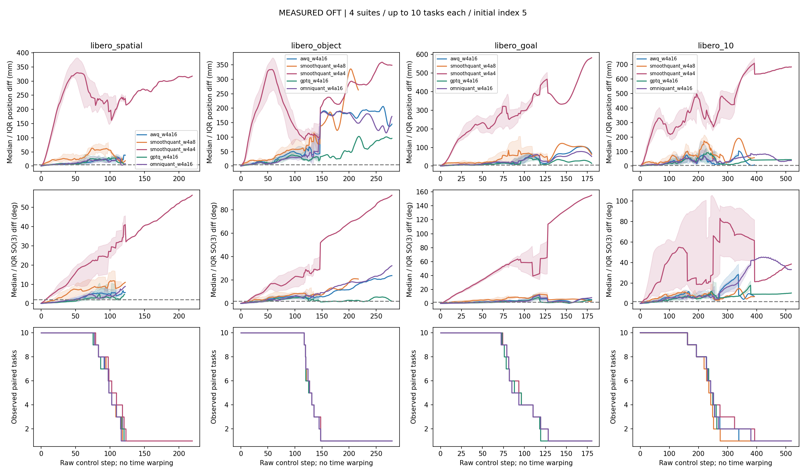
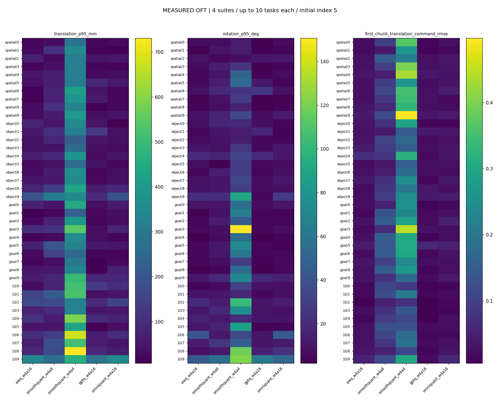
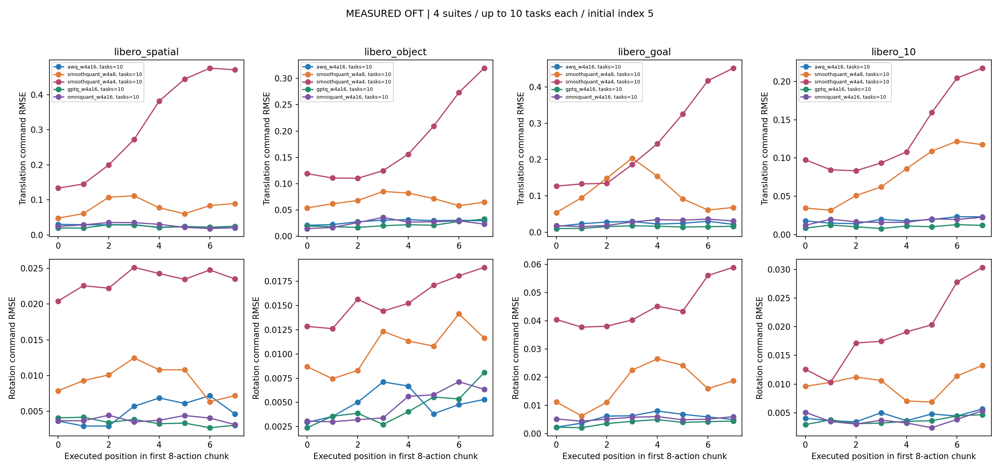
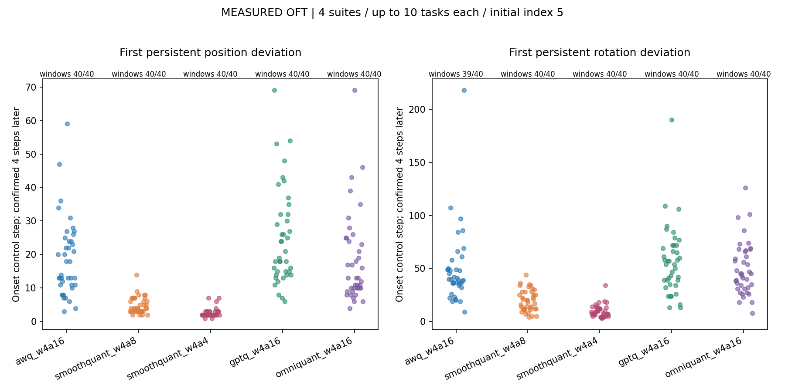
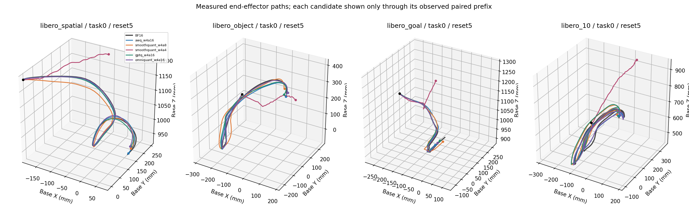
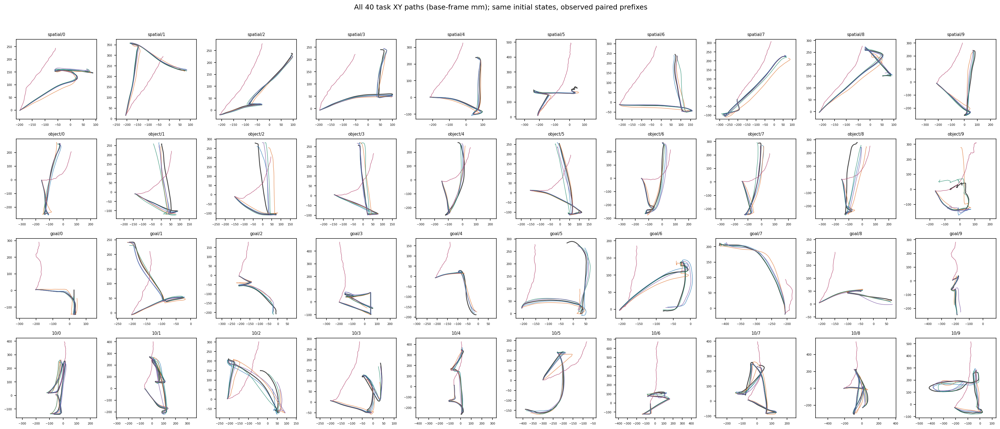
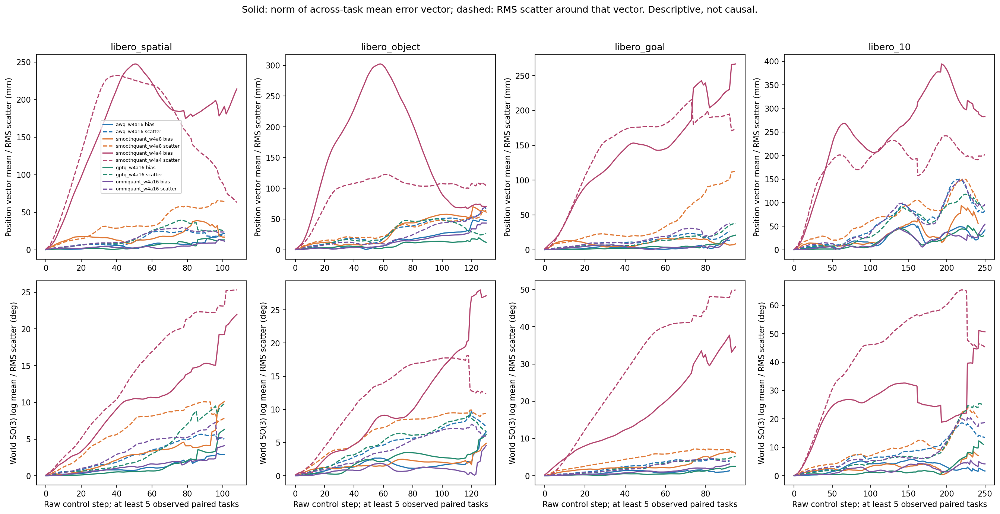
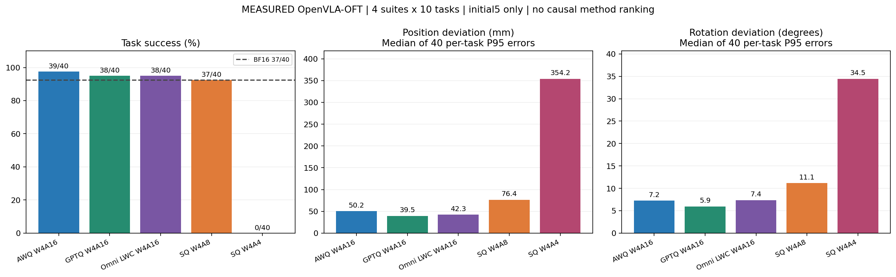

One initial state per task. Missing cases remain missing. Pose differences describe closed-loop divergence; the initial-action figure uses exactly matched input SHA. Windows use predeclared BF16-repeat thresholds and are not mathematical curvature points.







